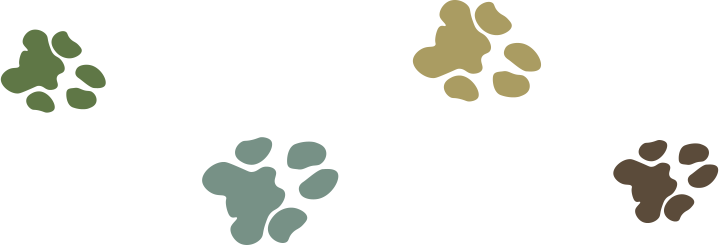

What do we believe in?
Being purr-stine cats. We want everyone (except dogs) to be a cat. We want the whole world to see that being a cat is the best possible way to live life. We’re not kitten around — we want cats to rule the UNIVERSE.
Who is our most fur-midable cat?
Prophet Fluffy is our founder and leader. He is the ultimate cat. He guides us all towards our catdom and we worship him because he is purr-fect. He consumed more Meow Mix than every cat in the world combined times ten. He’s even outlived all nine of his lives! Isn’t that im-paw-ressive? All Hail Prophet Fluffy!
How did we fur-m?
It all started when Prophet Fluffy was basking in the sun on a cat tree when a sudden realization struck him. The cat life is the ultimate life. He believes that everyone has the capability of becoming Feline so as long as you abandon your previous lifestyle and commit to the way of the cat.